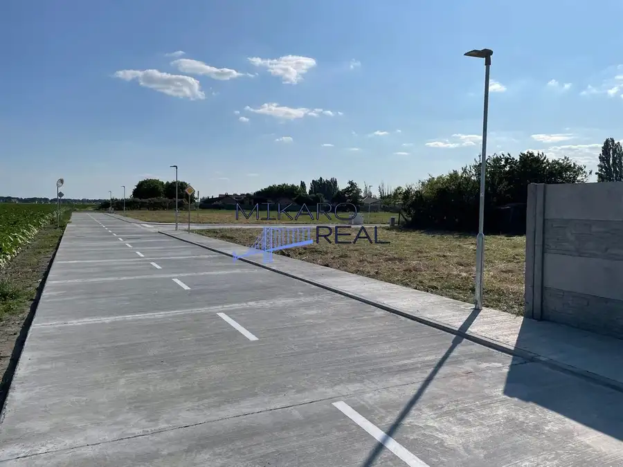
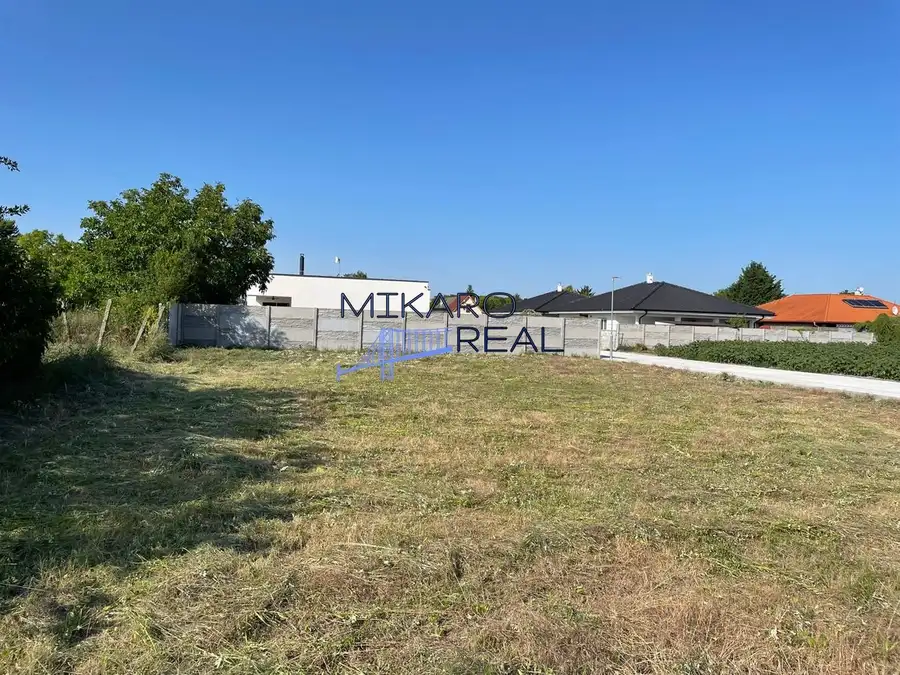
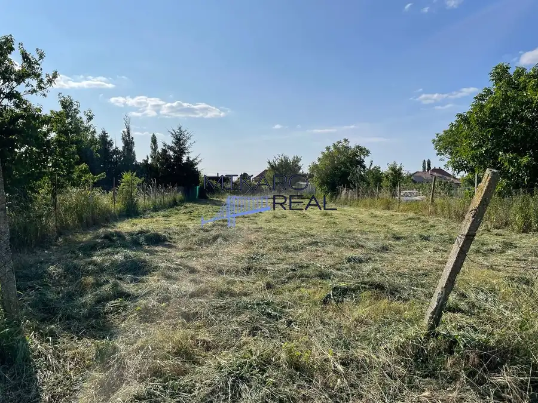
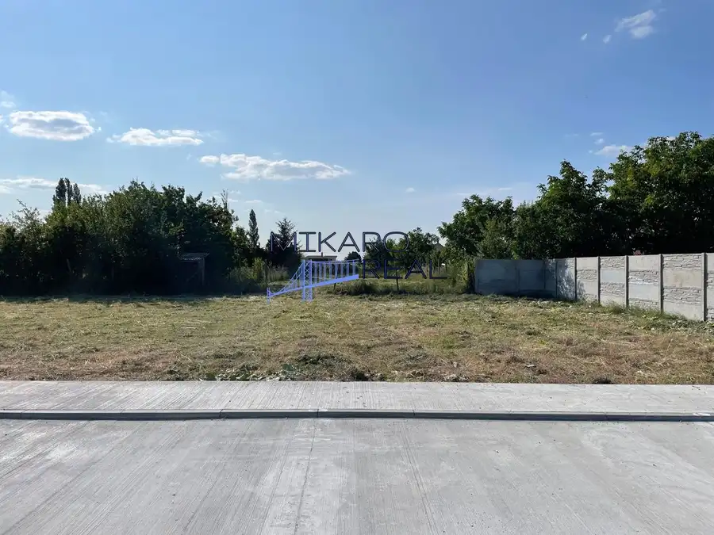
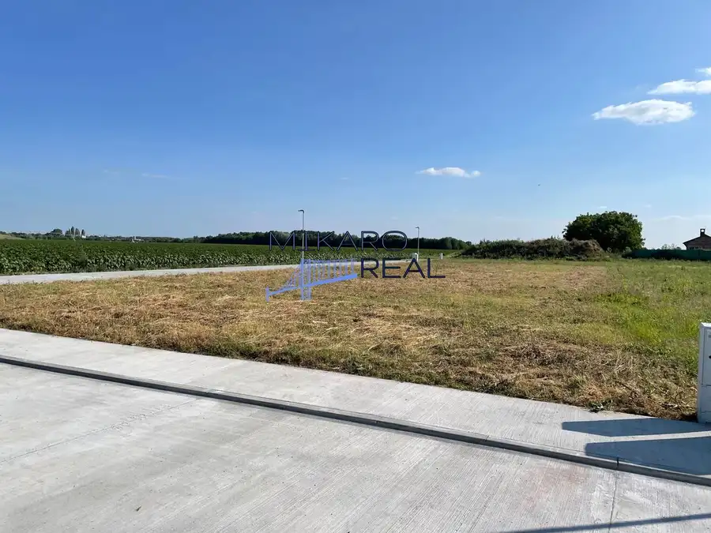
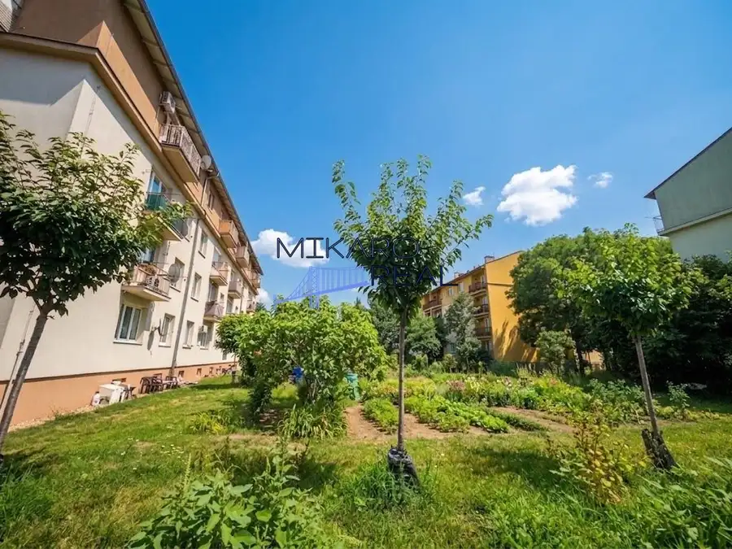
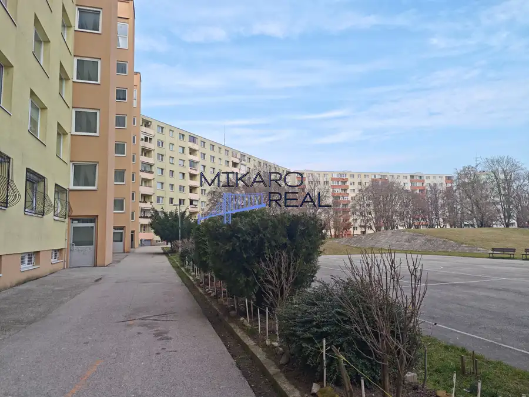
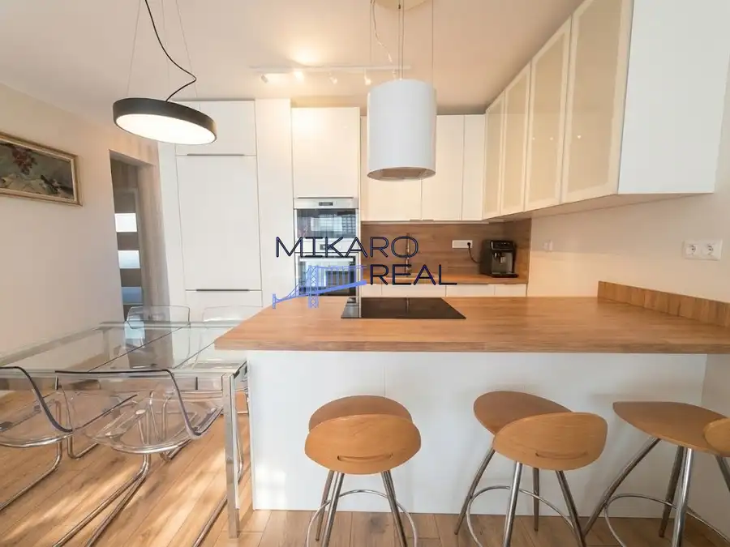

STAVEBNÝ POZEMOK V TICHEJ LOKALITE – MICHAL NA OSTROVE Ideálne miesto pre váš vysnívaný domov!
Michal na Ostrove





- Plocha1167 m²
O nehnuteľnosti
Hľadáte pokojné bývanie mimo ruchu mesta, no stále s dobrou dostupnosťou? Máme pre vás skvelú príležitosť!Ponúkame na predaj slnečný stavebný pozemok v obci Michal na Ostrove s celkovou výmerou 1 167 m², určený na výstavbu rodinného domu. HLAVNÉ VÝHODY POZEMKU:Prístup z dvoch strán – výborné dispozičné možnosti výstavbyTichá a príjemná lokalita – ideálna pre rodinné bývanieDostatok súkromia a priestoru PARAMETRE:Pozemok pozostáva z dvoch parciel:cca 20 × 30 mcca 13 × 45 mMožnosť výstavby nízkopodlažného rodinného domu (bungalov)Zastavanosť až 35 % podľa územného plánu TECHNICKÉ INFORMÁCIE Elektrina priamo na pozemku (rozvodová skriňa) Vlastná studňa Žumpa Spevnená prístupová cesta (betón) Verejné osvetlenie a chodníky LOKALITA:Pozemok sa nachádza v pokojnej časti obce s výbornou dostupnosťou do mesta, čo z neho robí ideálne miesto pre komfortné bývanie spojené s prírodou. CENA: 117 000 € (kompletná kúpna cena) Neváhajte nás kontaktovať a príďte sa presvedčiť osobne – tento pozemok má veľký potenciál stať sa miestom vášho nového domova!Cena zahŕňa právny servis a služby realitnej kancelárie. Zabezpečíme Vám potrebnú zmluvnú dokumentáciu prostredníctvom zmluvného advokáta, zastrešíme katastrálne konanie, v prípade potreby pomôžeme s financovaním prostredníctvom nášho zmluvného finančného poradcu a vybavíme znalca. Budeme s Vami až po protokolárne odovzdanie nehnuteľnosti.Touto nehnuteľnosťou Vás prevedie certifikovaný realitný maklér.Katarína Buzová +421 903 939 881 buzova@mikaroreal.sk
Parametre
- Druh
- Pozemok pre rodinné domy
- Dátum zverejnenia
- 26. 10. 2025
- Elektrina
- Rozvodňa
- Funkčné využitie
- Výstavba rodinného domu
- Odpadové vody
- Na pozemku - Žumpa
- Plocha pozemku
- 1167 m²
- Plyn
- Nedostupné
- Pripravenosť k výstavbe
- Schválené v územnom pláne
- Terén pozemku
- Rovinatý
- Typ
- Predaj
- Voda
- Na pozemku - Studňa
Kde to je


Mohlo by Vás zaujímať

BytNové 189 000 €NA PREDAJ: Kompletne zrekonštruovaný 2,5-izbový byt (64,84 m²) s balkónom a vlastným kotlom – SNP 14, Ivanka pri Dunaji Ivanka pri Dunaji 2-izbový64.84 m²2. podlažie
BytNové 225 000 €Priestranný 4-izbový byt s loggiou – ideálny na rekonštrukciu podľa vlastných predstáv Podunajské Biskupice, Bratislava 4-izbový75.13 m²7. podlažie
BytNové 249 500 €Oáza pokoja a moderného bývania: 3-izbový byt s vlastnou záhradou, predzáhradkou a studňou | Nová Dedinka Nová Dedinka 3-izbový73.99 m²1. podlažie